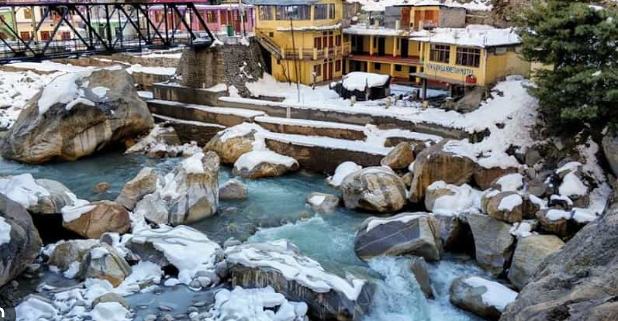
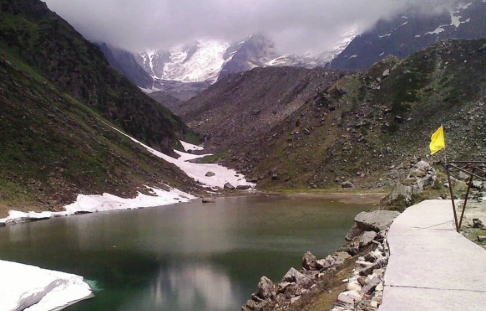
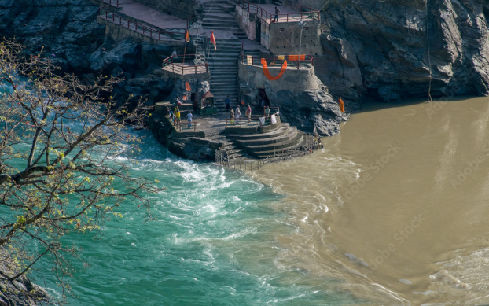

Kedarnath Temple
The ancient Hindu temple dedicated to Lord Shiva, part of the Chota Char Dham pilgrimage in Uttarakhand.

Gaurikund
The base camp village for Kedarnath trek, famous for its natural hot water springs and scenic beauty.

Chorabari Lake
Also known as Gandhi Sarovar, a glacial lake near Kedarnath temple, reflecting the surrounding Himalayan peaks.

Bhagirathi River
The sacred river flowing through Kedarnath valley, adding serenity and scenic beauty to the pilgrimage.

Himalayan Views
Breathtaking views of snow-clad peaks and valleys surrounding Kedarnath, perfect for nature and photography enthusiasts.